v1.7 June 2014
Mike Murphy, mimurphy@users.sourceforge.net
- EMU7800 releases can be downloaded from SourceForge here.
- Click here to jump to the Keyboard Mappings.
- Click here to jump to the Screenshot Gallery.
- Click here to run the Silverlight version.
- Click here for the Windows Phone version.
- Click here for the Windows Store version.
1.0 Introduction
This is a release of EMU7800, an Atari 7800 emulator implemented using Microsoft's .NET platform. Most ProSystem (7800) and VCS (2600) titles run well. EMU7800 runs on Windows Vista SP2 and higher systems. Performance is sufficient on current hardware. Send me a note if you have questions or feedback. Enjoy!
1.1 Copyright Notice, Disclaimer, License
EMU7800 is Copyright © 2003-2014 Mike Murphy.
THIS SOFTWARE IS PROVIDED "AS-IS" WITHOUT ANY EXPRESSED OR IMPLIED WARRANTY. IN NO EVENT WILL THE AUTHOR BE HELD LIABLE FOR ANY DAMAGES ARISING FROM THE USE OF THIS SOFTWARE. PLEASE SEE THE ENCLOSED "LICENSE.TXT" FILE FOR THE COMPLETE LICENSING TERMS.
1.2 Release Notes
v1.7
- Increased joystick deadzone to make Xbox 360 wireless controllers usable under Windows 8.1
- Added the ability to swap input jacks via the W key
- No changes to the core emulation library
- No changes to EMU7800 Classic
v1.6
- EMU7800.D2D: Included
EMU7800.Launcher.exeto enable launching of ROMs not recognized by EMU7800 D2D - EMU7800.D2D: Corrected paddle swapping
- EMU7800.D2D: Minor correction in .a78 file recognition
- Project format updates to VS2013 (applicable to source release only)
- No changes to the core emulation library
- No changes to EMU7800 Classic
v1.5
- Release of Win32 port of new Windows Store version (a.k.a., "EMU7800 D2D")
- Source distribution includes source code for the new D2D version, as well as a POKEY sound emulator for homebrew developers
- Upgrade to .NET 4.5
-
Windows Installer and ClickOnce installations are now discontinued.
Source and binaries for the Windows Desktop are distributed exclusively as
.ziparchives. For a no-hassle installation experience, look for EMU7800 in the Windows Store—free with no advertisements EMU700.DumpBin.exeutility included to assist in making updates to theROMProperties.csvrom-recognizer repository by readinga.78headers and computing MD5 hashes- No changes to the core emulation library
v1.4
- Added several 7800 homebrew entries to
ROMProperties.csv(the list of recognized ROM files.) - Windows Phone: Added hardware keyboard support, changed genre to apps.games, added more 7800 homebrews
v1.3
-
7800 Emulation Fixes:
- Discovered that Asteroids, Pole Position, and Xevious use a scheme to detect the joystick type (2600 vs. 7800) and alters the controller mapping accordingly. Brakes now work in Pole Position and missles and bombs are on separate joystick buttons in Xevious (thanks to Tom Hafner for the hardware report)
- Moved VBLANK OFF up by four scanlines, making the track selection screen in Pole Position II work with the joystick (thanks to Tom Hafner for the hardware report)
- Added support for the 2600-daptor II device, enabling use of real 7800 joysticks and 2600 keypad controllers
- Changed default keyboard bindings such that Z=Left 7800 Fire Button and X=Right 7800 Fire Button (previously transposed)
- Serialization fixed for the 78S4 cart type, affecting Karateka, RealSports: Baseball, Tank Command, and Water Ski
- Fixed: Integration of .zip format for ROM files prevented use of 7800 BIOS startup screen
- Windows Phone: By popular demand, added D-Pad input control
v1.2
- EMU7800 now available on Windows Phone Marketplace!
- Fixed emulation regressions from prior release that were known to impact KLAX, Ace of Aces, Pitfall, and Grandprix
- Restored Keypad controller input for 2600
v1.1
-
7800 Emulation Fixes:
- Xenophobe and One on One Basketball now work (Maria VBLANK incorrectly relied upon DMA enable)
- Fatal Run and Rampage now work (CPU ADC instruction bug)
- Ballblazer and Commando now have music (Pokey sound support added)
- Jinks opening screen speech synth now clear (TIA sound was not sampled at 7800 rate; PAL configuration was incorrect)
- Barnyard Blaster and Meltdown are now playable, no title screen bypass on Sentinel prototype (Lightgun emulation corrected)
- Tower Toppler works (per the game manual, make sure both difficulty switches are set to "Pro")
- Several homebrews and unreleased prototypes are now recognized
- Crossbow configuration switched from joystick to lightgun
- Added support for 2600-daptor and for Atari 2600 driving controllers through Stelladaptor/2600-daptor. Thanks to Tom Hafner for providing programming information and testing support
- Added support for the 2600 32-n-1 cart type
- Corrected issue where lost DirectInput8 joystick device would terminate fullscreen DirectX startup
- Screenshots are now output to the My Pictures folder
v1.0
- Small performance optimization by using 32-bit integer arrays over byte arrays for framebuffer data
- Fixed: Broken functionality on Console Tab for configuring unrecognized roms
- Fixed: Broken Key Binding functionality in certain scenarios
- DirectX: Eliminated synchronization with vertical retrace to make UX acceptable on a wider range of systems
- DirectX: Now runs when there is no system audio device available
- Custom binary serialization necessary for the Windows Phone platform
- Introduced lightweight WebInstaller (ClickOnce) option to prepare for future deprecation of the .msi installer
- Upgraded Silverlight version to Silverlight 5
- Initial Windows Phone release to Windows Phone Marketplace
- More games added to the Silverlight distribution
- Added: ROM entry for Pac-Man Collection (an Atari 7800 Homebrew)
v.97
- Updated: Consolidated x86 and x64 deployments for simplicity (EMU7800 will run in 64-bit mode when run on a x64 Windows OS)
- Added: Self-extracting 7-Zip archive as an alternative deployment option
- Fixed: Using highscore cart prevented 7800 titles from running
- Fixed: Ungraceful failure when the Windows Audio service is stopped
- Fixed: Dependency on the C Runtime Library (CRT) .dll that prevented DirectX from working on machines without the CRT
v.96
- Added: Silverlight 4 version
v.95
- Updated: Internal refactoring to make the emulator core more platform neutral
- Updated: Moved to .NET Framework 4.0
- Updated: DirectX dependencies to SDK June 2010
v.91
- Updated: DirectX dependencies to SDK March 2009
- Added x86 and x64 specific builds
0.90
- Updated: Replaced
SDL.dllwith newEMU7800.Direct.dllfor better fullscreen and windowed-mode experience on Vista - Updated: Corrected sound encoding to reduce audible pops
- Updated: Fixed minor bugs with new TIA sprite positioning code that affected Demon Attack, Centipede, and Spiderfighter
- Added: Key bindings reassignment dialog
0.88:
- Updated: Rewrote 2600 TIA sprite positioning code, resolving some known issues
- Updated: Moved to .NET Framework 3.5
- Updated:
SDL.dllto version 1.2.13
0.81:
- Added: WPF Host (Windows Presentation Foundation) for better compatibility with Windows Vista
- Updated:
SDL.dllto version 1.2.11
0.71:
- Added: Web browser control on new Help tab, enabling easy reference to this README and online game manuals where defined in
ROMProperties.csv - Fixed: 7800 Emulation: 320B mode corrected to correspond to the real hardware—courtesy of Matthias Luedtke (matthias@atari8bit.de)
- Updated: Moved to .NET 2.0 and Visual Studio 2005
- Updated:
SDL.dllto version 1.2.10 - Added: Emulator sleeps after each frame is rendered to reduce superfluous CPU consumption (can be tuned via the Console tab)
- Updated: Better pause behavior—modal functions are still available during pause
0.61:
- Fixed: Emulator continued to run in the background when the window was closed
- Progress meter added so the user has something to watch while large ROM directories are examined
- Added: High Score Cartridge support (7800)—courtesy of Matthias Luedtke (matthias@atari8bit.de)
- Added: Settings are stored in the Win32 registry, so they persist across new versions and recompiles
- Updated:
SDL.dllto version 1.2.8 - Updated: Unified distribution into one single
.MSIarchive, that can build itself
0.60:
- Added: Support for the Stelladaptor controller
- Added: Recognizes the now correct 7800 NTSC BIOS. Old 7800 BIOS is still recognized for now, but a warning message appears on the Green Screen log. Thanks to Mitchell Orman (Mitch@atari7800.org) for the information
- Numerous minor fixes and documentation updates
0.55:
- Added: NOP instruction register dumping (homebrew developer support), activate on the console using
cpunop on. Setting will persist between invocations - Added: Button on the Settings Tab that brings up an openfile dialog to load previously saved machine states
- Added: Double-clicking on the game select tab will immediately start the selected ROM
- Updated: Converted ROM database to a .CSV file: Editable via MS Excel or text editor
- Fixed: PAL 7800BIOS startup
- Added: Command-line ROM invocation to support various emulator front-ends
- Reverted: TIASound to v0.41 version: fixes a sound omission bug
- No changes to emulation were made for this release
0.50:
- 7800 Emulation: Most 7800 titles are now playable
- Added: 7800 BIOS startup can be skipped
- Added: Both .a78 and .bin 7800 ROMs are supported
- Added: Game state save/restore
- Added: Mouse-based lightgun support, which works correctly for 2600 games
- Added: GUI options for varying emulation speed, etc
0.41:
- Substituted use of Managed DirectX with the Simple DirectMedia Layer (SDL). Fullscreen performance is now on par with the most excellent Z26 emulator
- Solved the sound syncronization problem; audio now works perfectly
- Added: Game controller (joystick) support
- Added: mouse-based paddle emulation on SDL fullscreen mode
- No changes to emulation were made for this release
0.33:
Further refined the HMOVE emulation, added a few illegal opcodes to enable some of the homebrew titles to work, and fixed several emulation bugs. This cleaned up Pitfall2, and other Activision titles that had visual artifacts.- Fixed: eliminated PIA bugs: no more jittering for Star Fox, Off Your Rocker, Spitfire, Omega Race, Blueprint, and others probably
- Fixed: minor missle/ball positioning TIA bug
- Fixed: booster grip controller now works right
- Fixed: Omega Race rom was being ignored because of its odd size
- Fixed: emulator no longer requires one line of VSYNC; this helps one of the Bowling ROMs and others probably
0.32:
- Fixed: the file picker on the GameSelectTab hung in certain circumstances
- Fixed: Pitfall2 rom was being ignored because of its odd size Cleaned up the distribution by removing some unneeded junk
0.31:
- First major release via SourceForge
1.3 Acknowledgements
EMU7800 is a derived work of many people. Please let me know should others need to be included in the following list:- Bradford W. Mott, et al., author of the Stella emulator
- John Saeger, et al., author of the Z26 emulator
- Dan Boris, author of 7800 emulation in MESS
- Greg Stanton, author of the ProSystem Emulator
- Andrew Towers, Author of "TIA Hardware Notes: A Small Opus on the TIA"
- Ron Fries, Author of the TIASound library
For all things Atari, including game manuals, tips, and community, be sure to visit AtariAge!
1.4 Known Issues
- 2600 homebrews not well supported
- No Supercharger support
- No Mindlink controller support
2.0 Installation
2.1 Prerequisites
To run EMU7800, you will need to have .NET 4.5 installed onto your Windows-based computer. You can do this for free via Windows Update. To have the capability to build from the included source code, you'll either need the .NET 4.5 software development kit (SDK) or Visual Studio 2013. For full performance, a machine with at least 1.5 GHz CPU frequency is required. Most modern hardware exceeds this minimum.
2.2 Installing the Distribution
Unzip the archive to a convenient location and create a shortcut to the .exe file found within.
(Note that EMU7800.DumpBin.exe is a commmand-line utility for inspecting ROM files.)
2.3 Rebuilding from Source
For the curious, the complete source code is available for download in a .zip archive. The solution and project files are in Visual Studio 2013 format. After unpacking the source distribution, perform the following first to get the source to build successfully:
- Use Visual Studio 2013 for best results
- Deactivate code signing when there are errors reporting missing key files (Project Properties > Signing Tab > Uncheck "Sign the assembly")
The source distribution consists of:
- EMU7800.Win - Classic version
- EMU7800.D2D - Win32 port of the Windows Store version (D2D=Direct2D)
- EMU7800.DumpBin - Utility for computing MD5 hashes of ROM files and for dumping headers of
.a78files - EMU7800.SoundEmulator - Potentially useful for homebrew authors that need a POKEY sound emulator for development
2.4 Game Cartridge Information Database (a.k.a. ROMProperties)
In EMU7800, recognized game ROM files have associated properties that determine the proper execution configuration of the emulator.
These attributes are stored in the ROMProperties.CSV file, located in the same directory as the executable.
Any editor that can work with .CSV files (e.g. NOTEPAD.EXE and Excel™), can be used to update the file.
In the distribution, there is a EMU700.DumpBin.exe utility that will compute MD5 hashes suitable for adding entries to this file.
3.0 Running the Emulator
3.1 Default Keyboard Mappings
| Key | Function |
|---|---|
| ESC | Escape (quit) from the currently running machine/game |
| Q | Swap Stelladaptor/2600-daptor paddles P1/P2 on device 0 |
| W | Swap game controller/joystick devices 0/1 |
| E | Swap Stelladaptor/2600-daptor paddles P3/P4 on device 1 |
| P | Pause the emulator, any other key resumes |
| M | Sound mute toggle |
| F | Show frame rate, emulator execution statistics |
| R | Game Reset Console Switch |
| S | Game Select Console Switch |
| C | Toggle between Color and B/W Console Switch settings |
| 1 | Toggle between A/B difficulty for left player |
| 2 | Toggle between A/B difficulty for right player |
| F1 | Set keyboard/mouse to player 1 control |
| F2 | Set keyboard/mouse to player 2 control |
| F3 | Set keyboard/mouse to player 3 control |
| F4 | Set keyboard/mouse to player 4 control |
| F5 | Pan display left |
| F6 | Pan display right |
| F7 | Pan display up |
| F8 | Pan display down |
| F11 | Save machine state to desktop |
| F12 | Save Screenshot to the My Pictures folder |
| Up Arrow | Move up: joystick, booster grip |
| Left Arrow | Move left: joystick, booster grip, paddles, driving |
| Right Arrow | Move right: joystick, booster grip, paddles, driving |
| Down Arrow | Move down: joystick, booster grip |
| X | Trigger (Right Fire Button for 7800, Fire Button for 2600) |
| Z | Booster (Left Fire Button for 7800) |
| NUMPAD7 | Keypad 7 |
| NUMPAD8 | Keypad 8 |
| NUMPAD9 | Keypad 9 |
| NUMPAD4 | Keypad 4 |
| NUMPAD5 | Keypad 5 |
| NUMPAD6 | Keypad 6 |
| NUMPAD1 | Keypad 1 |
| NUMPAD2 | Keypad 2 |
| NUMPAD3 | Keypad 3 |
| NUMPAD* | Keypad * |
| NUMPAD0 | Keypad 0 |
| NUMPAD/ | Keypad # |
3.2 Game Controller/Joysticks
Up to two game controllers (e.g. joysticks) can be used, where the first two found in the device list will be selected for use.
For games that use the paddle controller, the mouse will be used for input unless a Stelladaptor or a 2600-daptor controller is detected. For the uninitiated, these are USB adapters that enable usage of the original Atari controllers. At the time of this writing, the Stelladaptor is no longer is available for purchase. Note the Stelladaptor will be recognized as a 2600-daptor.
The paddle swapping keys (Q and E) are useful when you are using a set of original Atari
paddles where one of the paddles is excessively jittery.
On the Atari 7800, Asteroids, Pole Position II, and Xevious include obscure and undocumented joystick detection logic (2600 vs. 7800 joystick.)
The EMU7800.Launcher.exe can be used to configure Joystick controllers instead of ProLine Joystick controllers for the above titles to experience the behavior.
When using two 2600-daptor IIs for Star Raiders, they may not be recognized in the proper order leaving the keypad on P1 and the Joystick on P2.
The easist way to resolve this is to press the W key to virtually swap the adaptors.
3.3 Paddle and Lightgun Emulation
On paddle games, the mouse can be used as the paddle controller. Sensitivity is currently not configurable. The mouse is also used for lightgun games in Fullscreen DirectX mode on EMU7800 Classic. Look for a small glowing segment that indicates where on the screen the emulated lightgun is pointed at. On EMU7800 D2D, the mouse pointer is always the lightgun target.
3.4 User Interface
This section only pertains to EMU7800 Classic.
3.4.1 Game Select Tab
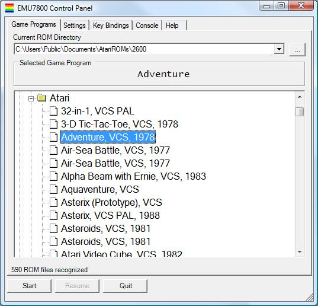
The number of ROMs recognized in the roms\ directory is displayed in the lower left corner.
To select a new directory, click the Select ROM File button, and navigate to the ROM directory of your choice.
When a ROM file is selected, the rest of the directory contents will be scanned and will be presented for subsequent selection.
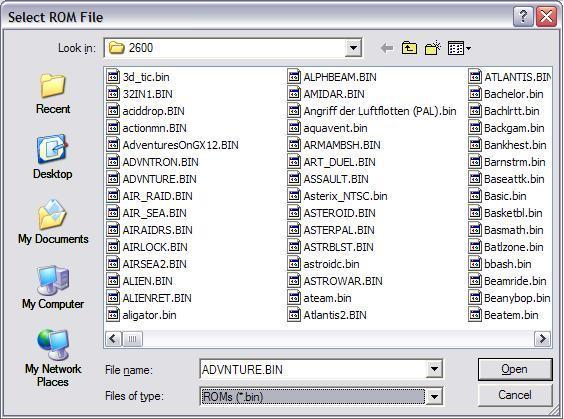
By default, .bin files will be displayed in the Open File dialog.
To show .a78 files, use the File Type drop-down.
3.4.2 Settings Tab
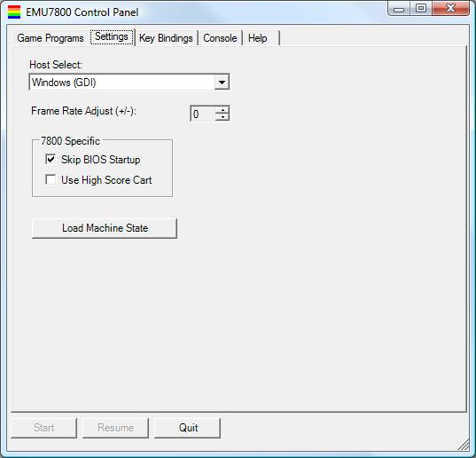
There are several settings that can be adjusted on this tab. Settings will saved, so they will not need to be set again every time the program is launched.
- Host Select: Choose between DirectX Fullscreen or DirectX Windowed mode.
- Frame Rate Adjust: Adjusts emulator speed relative to the default. Default framerate for NTSC (N. American T.V. standard) games is 60hz, while default framerate for PAL (European T.V. standard) games is 50hz. Persistent rough audio indicates the emulator is not able to run fast enough to keep the sound buffer full. To resolve, continue adjusting the frame rate downwards until the audio smoothes out.
- Skip BIOS (7800 Emulation): The real Atari 7800 executes BIOS code on machine startup. To do this on the emulator, the BIOS ROM(s) (one for NTSC, and one for PAL) need to be in the current ROM directory and this checkbox needs to be unchecked. If you do not have the BIOS files or just want to skip BIOS execution, check this box.
- Use 7800 High Score Cart (7800 Emulation): For the 7800, there was a cartridge that provided capability for 7800 games to save high score information. Not all games, however, took advantage of this. Set this checkbox to simulate this device—you will also need the associated ROM for this feature to work. EMU7800 will detect the ROM regardless of filename, as long as it is in the current ROM directory.
3.4.3 Console Tab
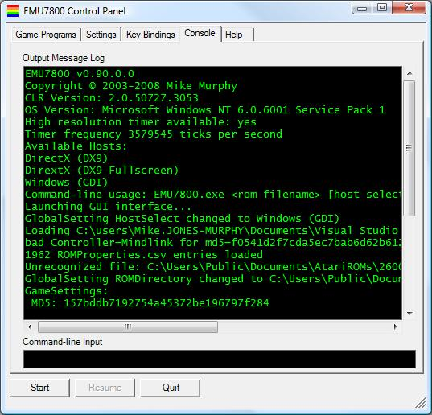
Events pertinate to the execution of the emulator are logged to the Console.
Commands may also be issued here to access features not available via the GUI.
To see what is available, enter ?.
3.4.4 Help Tab
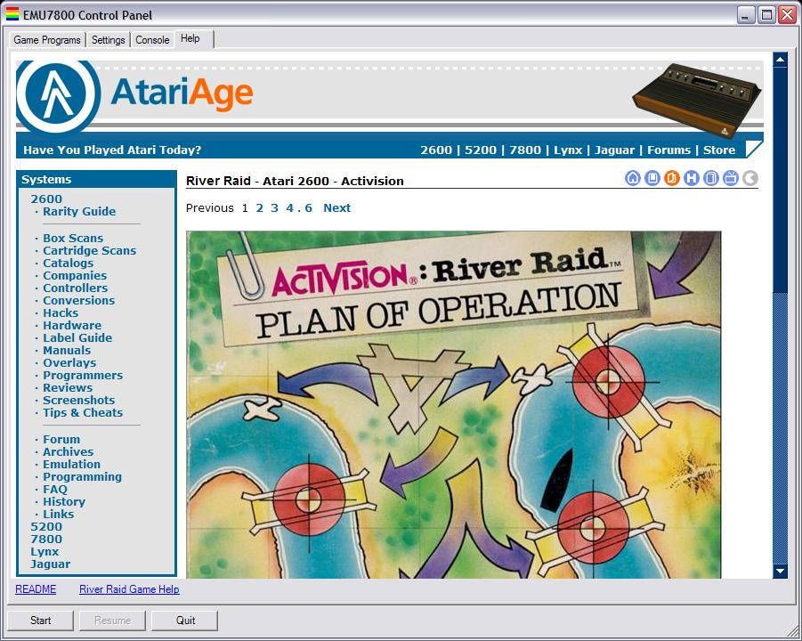
The Help tab features an integrated web browser control.
Two link controls are available, located at the bottom of the control.
The README link references this README file on the local system.
The Game Help link varies dependent upon the currently selected game, and is intended to reference original game instruction manuals, available online.
At the time of this writing, not all games have help URLs defined.
URLs can be specified in the ROMProperties.csv file, and more will be included in subsequent EMU7800 verisons.
Standard web browser features, like the Back button and Refresh, are available by right-clicking in the browser window.
Note that when the Game Help link is clicked, it will "disable" to indicate the page is loading. It will "re-enable" once loading is complete. If no Game Help URL is available, the link will not be visible.
3.5 External Command-line Options
To support various emulator front-end programs, EMU7800 can be launched with a full filename provided as a command-line argument:
EMU7800.exe "EMU7800 installation directory\roms\OYSTR29.BIN" "DirectX (DX9)"
Should the ROM file not be found, be unreadable, or not recognized, the program will terminate with a non-zero return code.
4.0 Screenshot Gallery
Atari VCS (2600) Titles:
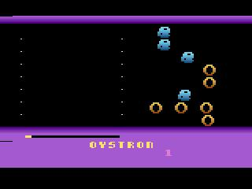
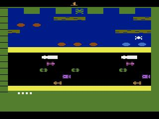
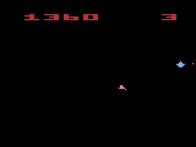
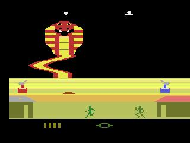
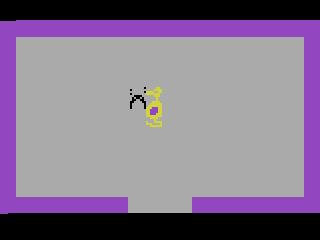
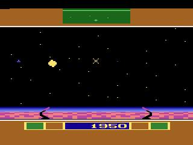
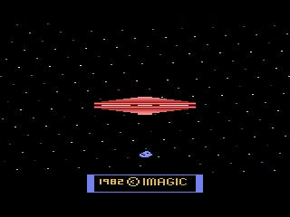
Atari ProSystem (7800) Titles:
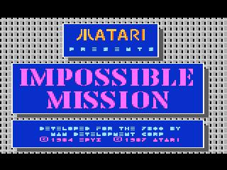
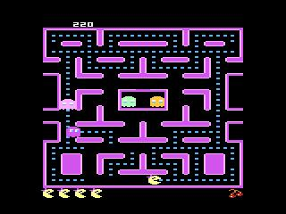
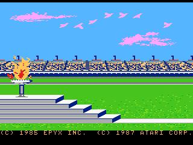
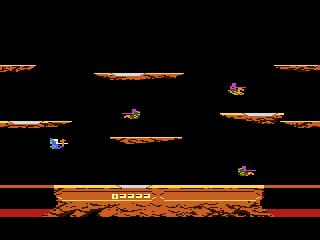
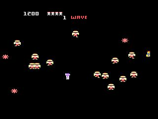
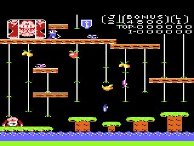
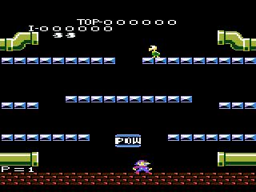